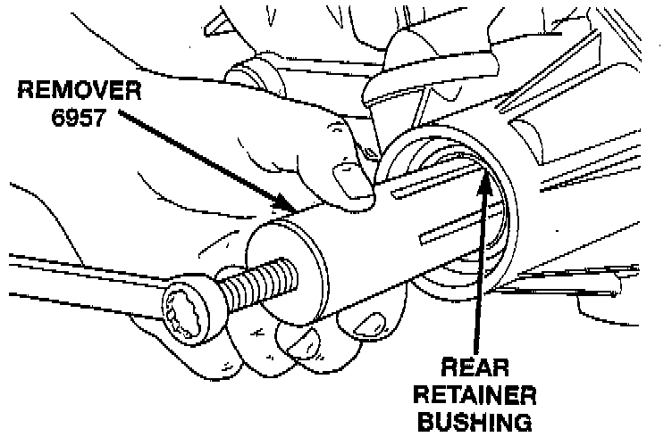
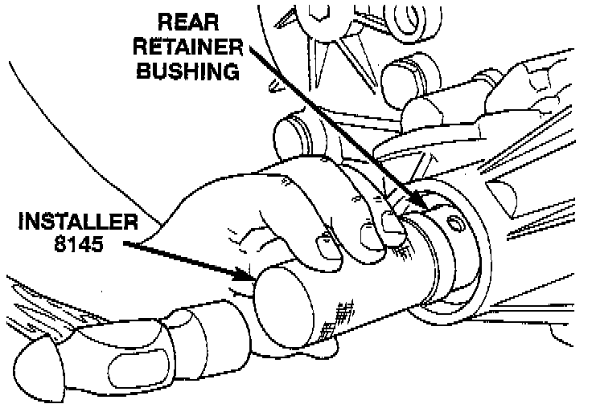
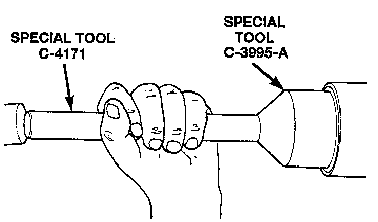

Rear Retainer Bushing and Seal Replacement
REMOVAL1. Raise vehicle.
2. Remove rear propeller shaft.
3. Using a suitable pry tool or slide-hammer mounted screw, remove the rear retainer seal.

4. Using Remover 6957, or equivalent, remove bushing from rear retainer.
INSTALLATION
1. Clean fluid residue from sealing surface and inspect for defects.
2. Position replacement bushing in rear retainer with fluid port in bushing aligned with slot in retainer.

3. Using Installer 8145, or equivalent, drive bushing into retainer until installer seats against case.

4. Using Installer C-3995-A, or equivalent, install seal in rear retainer.
5. Install propeller shaft.
6. Verify proper fluid level.
7. Lower vehicle.